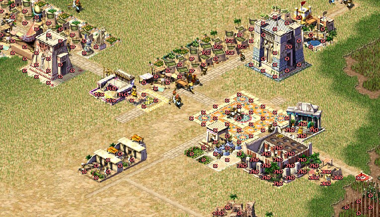
Путь от простых хижин к роскошным особнякам, украшенным фресками и колоннами, в Pharaoh — это не просто вопрос архитектуры и разные текстуры. Это отражение заботы игрока о своём виртуальном городе, его нуждах, вере и безопасности. Каждое жилище в городе это FSM, реагирующая на условия вокруг: достаток еды, доступ к воде, религиозные обряды, культурные радости и много чего еще.
Как только вы начнёте удовлетворять всё более разнообразные потребности граждан, их дома будут меняться — порой незаметно, порой стремительно. Эта система лежит в самом сердце игры, как это было и в предыдущей игре серии, дома влиляют друг на друга и соседние здания, а за простой визуальной компоненты из пары текстур на уровень дома скрывается сложный механизм симуляции, который делает каждый квартал города уникальным.
В этой статье попробую рассказать, как устроена эволюция домов, какие требования стоят за каждым уровнем жилья и как это было реализовано в оригинальной игре. Если вы вдруг пропустили встречу нашего жреческого круга... простите, предыдущие статьи про восстановление исходников этого старого ситибилдера, — обязательно найдите время, чтобы взглянуть на пару интересных моментов (Добро пожаловать в Древний…, ecs, dynvtbl, логические потоки и Фараоне, Как построить мастабу, Как рисуется карта в Фараоне, Новый дом для Фараона)
Все скриншоты в статье сделаны уже на рендере проекта, исходники на github
Теория без кода
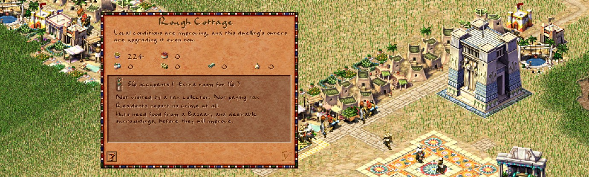
Ваши подданные всегда чего-то требуют: зерна, пива, места для молитвы... Разумеется, потребности — это неотъемлемая часть игры, жизненного цикла города, это ведь градострой. Потребности трансформируются в конкретные выгоды: довольные жители платят больше налогов, реже поднимают мятежи и не торопятся устраивать пожары (механика rioters) у соседей. В таких условиях город процветает, а статуи в вашу честь устремляются к богу-солнца Ra.
Каждая удовлетворённая потребность должна запускать некоторую игровую логику — будь то повышение стабильности, налоги, или комнаты для новых жителей. Не знаю как эти механики назывались в оригинальной игре, из моей переписки с Simon Bradbury, техлидом оригинального Caesar3, я понял что он называет их свойствами или атрибутами (attributes). Эти свойства складываются в стройную систему, требующую стратегического мышления и планирования в масштабах всего города, а ошибки караются достаточно быстрым исходом населения, куда-то в сторону мацы и земли обетованной.
От игрока в Цезарь/Фараон/Зевс эти атрибуты были скрыты за текстом в стиле "Нужен храм, нет чистой воды или Амбар мешает", это было отличительной чертой серии и позволяло реализовать с виду сложную механику (нет явных цифр) с взаимодействием между зданиями и желательностью земли. Но внутри эта система оказалась на удивление простой.
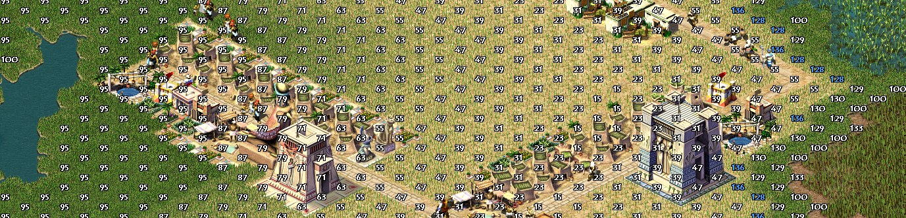
Такие вещи, как доход, счастье (desirability, желательность земли) и численность населения, уже присутствовали в предыдущих частях серии. Как обычно выбор, какие потребности удовлетворить в первую очередь и какие дополнительные выполнить ради бонусов — является частью головоломки про развитие города. Именно, что головоломки, оригинальные уровни были рассчитаны так, чтобы игрок нашел эффективное решение для ограниченного набора ресурсов, ванильные уровни что Цезаря, что Фараона создавались именно как ресурсный пазл с ограниченным набором частей.
Основные параметры домов - это количество населения, потребляемые ресурсы и сервисы, предоставляемые различными зданиями, и увеличиваются они преимущественно через удовлетворение потребностей домов через размещение неподалеку зданий, которые эти предоставляют. Механика работы с параметрами перекочевала напрямую из Цезаря - если вы обеспечите жителей домов первых уровней едой и доступом к чистой воде, то каждое такое обеспеченное жилище уже дает бонус к населению и возможность получать доход, если построить сборщика налогов.
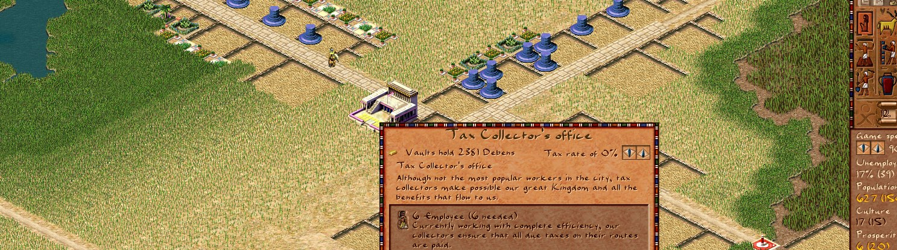
Причем игра показывает только значения запасенных товаров в доме в данный момент и описание чего зданию не хватает для роста в уровне.
Еще немного теории
Но дело касается не только счастья, дохода и численности населения. В группу атрибутов также входят пожарная безопасность, здравоохранение и ряд других параметров, связанных с возможностями, которые раскрываются по мере прохождения миссий. Они тоже все меряются некоторыми числами, но их игрок не видит вовсе, на скриншоте ниже показаны представление уровня пожароопасности в здании через оверлей, и как оно реально существует в игре.
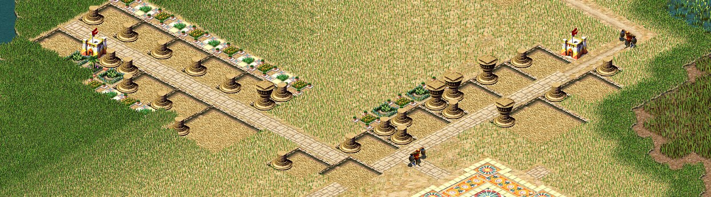
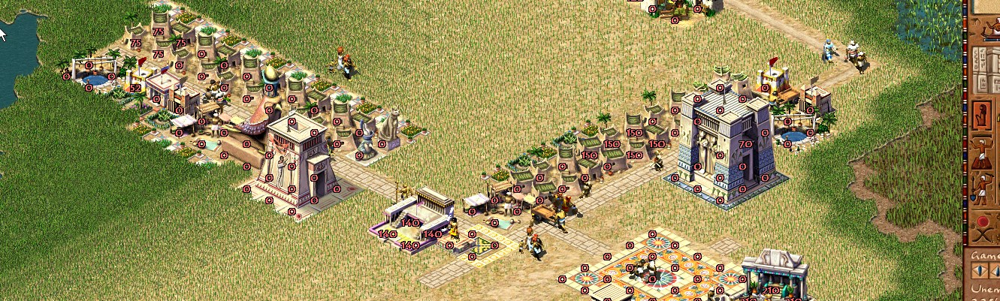
В оригинальной игре список оверлейных слоев был не очень большим, но восстановить получилось больше, видимо авторы не посчитали их важными или не успели доработать к релизу.
Широкий набор атрибутов, связанных с системой потребностей, даёт большую свободу как в проектировании самих связей, так и относительно бесконечную реиграбельность и большое число вариаций совмещения аттрибутов, позволяя игроку выбирать именно те способы решения, которые лучше всего соответствуют стилю управления или текущему положению дел на карте.
Overlays
enum e_overlay {
OVERLAY_NONE = 0,
OVERLAY_WATER = 2,
OVERLAY_RELIGION = 4,
OVERLAY_FIRE = 8,
OVERLAY_DAMAGE = 9,
OVERLAY_CRIME = 10,
OVERLAY_ENTERTAINMENT = 11,
OVERLAY_BOOTH = 12,
OVERLAY_BANDSTAND = 13,
OVERLAY_PAVILION = 14,
OVERLAY_SENET_HOUSE = 15,
OVERLAY_EDUCATION = 16,
OVERLAY_SCRIBAL_SCHOOL = 17,
OVERLAY_LIBRARY = 18,
OVERLAY_ACADEMY = 19,
OVERLAY_APOTHECARY = 20,
OVERLAY_DENTIST = 21,
OVERLAY_PHYSICIAN = 22,
OVERLAY_MORTUARY = 23,
OVERLAY_TAX_INCOME = 24,
OVERLAY_FOOD_STOCKS = 25,
OVERLAY_DESIRABILITY = 26,
OVERLAY_WORKERS_UNUSED = 27,
OVERLAY_NATIVE = 28,
OVERLAY_PROBLEMS = 29,
/// тут заканчивались видимые оверлеи оригинала
/// но были еще и другие, и это я не все еще вынес
OVERLAY_RELIGION_OSIRIS = 30,
OVERLAY_RELIGION_RA = 31,
OVERLAY_RELIGION_PTAH = 32,
OVERLAY_RELIGION_SETH = 33,
OVERLAY_RELIGION_BAST = 34,
OVERLAY_FERTILITY = 35,
OVERLAY_BAZAAR_ACCESS = 36,
OVERLAY_ROUTING = 37,
OVERLAY_HEALTH = 38,
OVERLAY_LABOR = 39,
OVERLAY_COUTHOUSE = 40,
OVERLAY_BREWERY = 41,
OVERLAY_LABOR_ACCESS = 42,
OVERLAY_SIZE
};Параметров действительно много, и чтобы дать возможность игроку смотреть более полную картину состояния карты - использовались так называемые оверлеи (overlays), которые визуально отображают разные параметры на карте, как было выше на двух скриншотах. Это помогает быстро понять, что влияет на тот или иной показатель, и, к примеру, устранить низкий уровень пожарной безопасности, перестроив район или добавив новые здания. Отрисовка оверлея - отдельная тема, тоже интересная, но сильно затрагивает рендер и выходит за рамки этой статьи, если кому интересно напишу об этом отдельно.
Решение пазла потребностей играет ключевую роль в росте населения города и прохождении уровня: все атрибуты, которые даёт жилое здание, напрямую зависят от того, какие потребности в нём удовлетворены - эта формула был опробована еще в Цезаре и хорошо себя зарекомендовала. Потребности более высокого уровня дают более высокие значения атрибутов — как напрямую (за счёт роста уровня дома), так и косвенно — для новых потребностей нужны новые здания, которым нужны обычно новые ресурсы, для которых нужны другие здания, которые эти ресурсы производят - такие вот скрытые производственные цепочки.
Код
FSM эволюции домов расположен (пока что) в файле building_house.cpp (https://github.com/dalerank/Akhenaten/blob/master/src/building/building_house.cpp)
Работа FSM разбита на несколько частей: потребление еды, ресурсов, сервисов и собственно само улучшение или снижение уровня дома. За счет того что в движке практически нет аллокаций памяти, все это довольно шустро крутится на больших картах в одном потоке. Для части данных так и не удалось понять за что они отвечали, поэтому они помечены как-то так unused.unknown_00c0
void city_resources_t::consume_food(const simulation_time_t& t) {
calculate_available_food();
g_city.unused.unknown_00c0 = 0;
resource_list consumed_food;
buildings_house_do([&] (building_house *house) {
resource_list consumed = house->consume_food();
consumed_food.append(consumed);
});
res_this_month.consumed.append(consumed_food);
}
void city_resources_t::consume_goods(const simulation_time_t& t) {
if (t.day == 0 || t.day == 7) {
resource_list consumed_goods;
buildings_house_do([&] (building_house *house) {
auto house_consumed = house->consume_resources();
consumed_goods.append(house_consumed);
});
res_this_month.consumed.append(consumed_goods);
}
}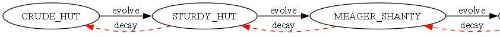
Изначально в расковыренных исходниках была здоровенная колбаса if и даже причесанный вариант вылазил где-то за восемьсот строчек. Толи это компилятор оргинальные исходники так развернул, что сомнительно ибо движок писался в 98 и широкого применения оптимиизирующие компиляторы еще не получили, толи это была такая изначальная задумка, но что было - то было.
Археология
if (state == HouseState::CRUDE_HUT) {
if (status == e_house_evolve)
change_to(BUILDING_HOUSE_STURDY_HUT);
} else if (state == HouseState::STURDY_HUT) {
if (status == e_house_evolve)
change_to(BUILDING_HOUSE_MEAGER_SHANTY);
else if (status == e_house_decay)
change_to(BUILDING_HOUSE_CRUDE_HUT);
} else if (state == HouseState::MEAGER_SHANTY) {
if (status == e_house_evolve)
change_to(BUILDING_HOUSE_COMMON_SHANTY);
else if (status == e_house_decay)
change_to(BUILDING_HOUSE_STURDY_HUT);
} else if (state == HouseState::COMMON_SHANTY) {
....Пришлось эту логику долго чистить, чтобы получился читабельный вариант, и в итоге всё свелось к меньшему switch вида:
Читабельный вариант
enum HouseState {
CRUDE_HUT,
STURDY_HUT,
MEAGER_SHANTY,
COMMON_SHANTY,
ROUGH_COTTAGE,
// ...
PALATIAL_ESTATE
};
struct House {
HouseState state;
house_demands* demands;
bool evolve() {
if (house_population() <= 0)
return false;
merge(); // Always happens if pop > 0
auto status = check_requirements(demands);
if (has_devolve_delay(status))
return false;
switch (state) {
case HouseState::CRUDE_HUT:
if (status == e_house_evolve)
change_to(BUILDING_HOUSE_STURDY_HUT);
break;
case HouseState::STURDY_HUT:
if (status == e_house_evolve)
change_to(BUILDING_HOUSE_MEAGER_SHANTY);
else if (status == e_house_decay)
change_to(BUILDING_HOUSE_CRUDE_HUT);
break;
// ... continue for each state ...
case HouseState::FANCY_RESIDENCE:
if (status == e_house_evolve && can_expand(9)) {
expand_to_common_manor();
map_tiles_gardens_update_all();
return true;
} else if (status == e_house_decay)
change_to(BUILDING_HOUSE_ELEGANT_RESIDENCE);
break;
// ...
default:
break;
}
return false;
}
};А еще позже вся логика была разбита на отдельные реализации, где стало проглядывать некое подобие структуры, которую уже получается править без слез. Там и сейчас ещё достаточно копипасты, но времени дальше это растащить не было.
bool building_house_elegant_manor::evolve(house_demands* demands) {
if (house_population() <= 0) {
return false;
}
e_house_progress status = check_requirements(demands);
if (has_devolve_delay(status)) {
return false;
}
if (status == e_house_evolve) {
change_to(base, BUILDING_HOUSE_STATELY_MANOR);
} else if (status == e_house_decay) {
change_to(base, BUILDING_HOUSE_SPACIOUS_MANOR);
}
return false;
}Чтобы дому перейти на следующий уровень, ему надо проверить доступность разных условий, чем выше уровень дома, тем больше сервисов ему необходимо. Проверки эти достаточно простые, поэтому их можно запускать часто и не бояться за фпс, авторы оригинальной игры (учтите что игра должна была запускаться на 200 мегагерцовых монстрах), автор статьи впервые играл OG на AMD K6 - 266МГц ( Super Socket 7, емнип) и приходилось снижать скорость в городе ибо всё было очень быстро. Делали такую проверку один раз в игровой день сразу для всех домов на карте, что давало несколько роботичное обновление домов на первых этапах игры, когда город не большой.
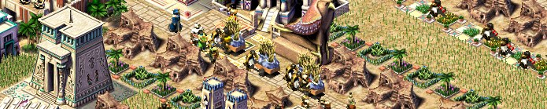
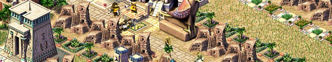
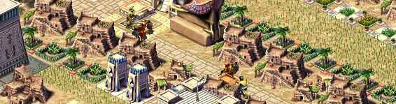
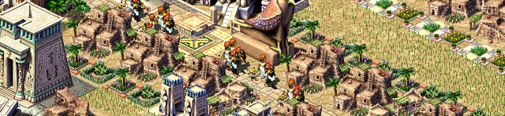
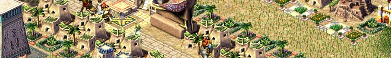
+--------------------------+ +-----------------------------+
| Start & house_level | +----> | Religion checks: |
| if for_upgrade: ++level | | | - num_gods vs requirement |
+--------------------------+ | | - update demands->missing |
| | | - update demands->requiring |
v | +-----------------------------+
+--------------------------+ | |
| Load model for level | | v
| model = model_get_house | | +-----------------------------+
+--------------------------+ | | Health services: |
| | | - dentist, magistrate |
v | | - health level check |
+--------------------------+ | | - update demands->missing |
| Water access: | | | - update demands->requiring |
| - needs fountain or well | | +-----------------------------+
| - update demands->missing| | |
+--------------------------+ | v
| | +-----------------------------+
v | | Food types available |
+--------------------------+ | | - count types |
| Entertainment & Education| | | - if < required: missing |
| - check d.entertainment | | +-----------------------------+
| - check d.education | | |
| - update demands->missing| | v
+--------------------------+ | +----------------------------+
| Goods check: | | |
| | | - pottery, linen, jewelry |
+--------->>>>>>------| | - beer and wine |
| - update demands if miss |
+----------------------------+
|
v
+--------------------------+
| Return e_house_evolve |
| (if all passed) |
+--------------------------+И вот если домик был готов к апгрейду, то уже запускалась смена текстуры, склеивание рядом стоящих домов размерорм в 1 клетку, в один большой дом 2х2.
Еще немного кода
Даже в такой достаточно старой игре разработчики уделяли много внимания относительно реалистичной модели функционирования дома, которая учитывала множество параметров. И еще 6 я восстановить не смог, ибо никакой код в оригинальной игре эти адреса не дергал, возможно это было что-то отладочное.
Это набор параметров, которыми оперирует один дом каждый фрейм
struct runtime_data_t : no_copy_assignment {
//e_house_level level;
uint16_t foods[8];
uint16_t inventory[8];
uint16_t highest_population;
uint16_t unreachable_ticks;
uint16_t last_update_day;
building_id tax_collector_id;
uint16_t population;
int16_t tax_income_or_storage;
uint8_t is_merged;
uint8_t booth_juggler;
uint8_t bandstand_juggler;
uint8_t bandstand_musician;
uint8_t pavillion_musician;
uint8_t pavillion_dancer;
uint8_t senet_player;
uint8_t magistrate;
uint8_t bullfighter;
uint8_t school;
uint8_t library;
uint8_t academy;
uint8_t apothecary;
uint8_t dentist;
uint8_t mortuary;
uint8_t physician;
uint8_t temple_osiris;
uint8_t temple_ra;
uint8_t temple_ptah;
uint8_t temple_seth;
uint8_t temple_bast;
uint8_t no_space_to_expand;
uint8_t num_foods;
uint8_t entertainment;
uint8_t education;
uint8_t health;
uint8_t num_gods;
uint8_t shrine_access;
uint8_t devolve_delay;
uint8_t bazaar_access;
uint8_t fancy_bazaar_access;
uint8_t water_supply;
uint8_t house_happiness;
uint8_t criminal_active;
uint8_t tax_coverage;
uint8_t days_without_food;
uint8_t hsize;
uint8_t unknown_00;
uint8_t unknown_01;
uint8_t unknown_02;
uint8_t unknown_03;
uint8_t unknown_04;
uint8_t unknown_05;
building_id worst_desirability_building_id;
xstring evolve_text;
};Когда все параметры подходят для апгрейда, остается совсем немного, чтобы изменить текстуру. Про реализацию vtableв plain-C я уже писал тут, а здесь есть еще один интересный момент - вот эта строчкаauto &d = (building_house::runtime_data_t)b.runtime_data;
ссылается на общий буфер данных, который шарится между всеми типами зданий, которые представлены в игре, но превращается в конкретные данные, которыми оперирует существующее здание.
building g_all_buildings[5000];
class building {
public:
enum { max_figures = 4 };
using ptr_buffer_t = char[24];
private:
ptr_buffer_t _ptr_buffer = { 0 };
class building_impl *_ptr = nullptr; // dcast
public:
e_building_type type;
animation_context anim;
std::array<figure_id, max_figures> figure_ids;
char runtime_data[512] = { 0 };Достаточно элегантное решение для того времени, которое позволяло получить подобие виртуальности и сделать перегруженные функции для каждого типа зданий (update, draw, handle etc), но сохранить при этом скорость работы чистого C. Движок Фараона был еще не полностью переведен на C++, как это было сделано в Zeus, где уже можно увидеть mangled имена классов и структур, но и не чисто сишный, как это было в Caesar.
Минусом такого решения с общим кешем была невозможность хранить более 512 байт в кеше для конкретного здания, но думаю это было намного больше чем реально было нужно классам. Сейчас подобный шаблон можно было бы назвать runtime_data, когда в некотором пуле одинакового размера создаются данные для разных структур, а тут получается что этот пул мы таскаем рядом с собой всегда.
Даже самый тяжелый класс для описания пирамид, вернее его кеш, занимал всего 234 байта. В оригинальной игре структура здания занимает 836 байт, что при статическом массиве в 5000 зданий давало ~ 4,2Mb в оперативке, учитывая что игра вышла в 1999 году, когда средний объем был порядка 64Mb в обычных системах и 128Mb в игровых, должно было хватать для очень большого города. До пирамид, я к сожалению еще не добрался, но мастабы уже можно строить, а логика у них фактически одинаковая.
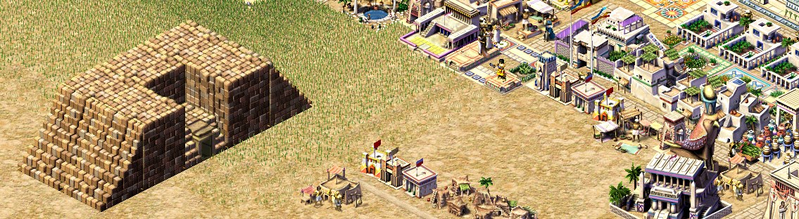
Редкие карты удавалось застроить таким большим числом зданий, плюсы у такого решения - этот кусок памяти можно просто сохранять и читать, не заботясь о сериализации, да и вообще анализируя реверснутые исходники игры - я все больше убеждаюсь в мысли, что писали её как минимум гении, которые в такие объемы (игра запускалась минимум на 32Мб + да еще и с текстурами) смогли впихнуть отличный ситибилдер.
Вернемся к обновлению текстуры, здесь код уже плюсовый и мой, но большая часть логики еще сохранена. В частности еще остался хардкод на смещения в текстурах для смерженных и одинарных домов.
void building_house::change_to(building &b, e_building_type new_type) {
auto &d = *(building_house::runtime_data_t*)b.runtime_data;
const int house_update_delay = std::min(house_up_delay(), 7);
const int absolute_day = game.simtime.absolute_day(true);
const bool can_update = (absolute_day - d.last_update_day < house_update_delay);
if (house_update_delay > 0 && (new_type > b.type) && can_update) {
return;
}
b.clear_impl(); // clear old impl
b.type = new_type;
auto house = b.dcast_house();
int image_id = house_image_group<false>(house->house_level());
const int img_offset = house->anim(animkeys().house).offset;
if (house->is_merged()) {
image_id += 4;
if (img_offset) {
image_id += 1;
}
} else {
image_id += img_offset;
image_id += map_random_get(b.tile) & (house->params().num_types - 1);
}
map_building_tiles_add(b.id, b.tile, b.size, image_id, TERRAIN_BUILDING);
d.last_update_day = game.simtime.absolute_day(true);
}
А вот эта строчка отвечает за рандомные текстуры одинарных домов, чтобы город не выглядел совсем уж одинаковым.
image_id += map_random_get(b.tile) & (house->params().num_types - 1);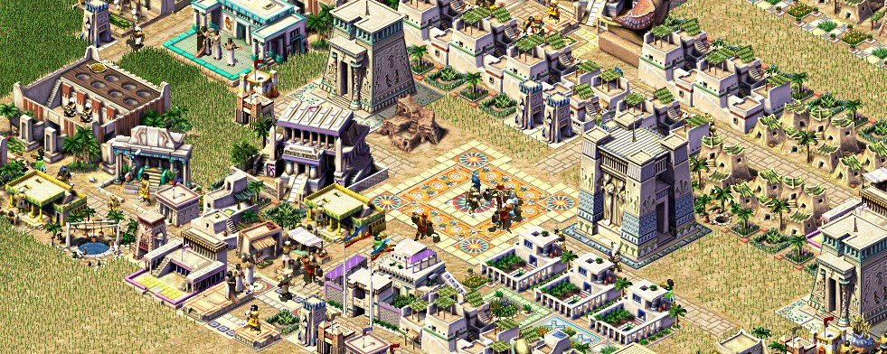
Заключение
На этом завершу рассказ об атрибутах — системе, которая на много лет стала эталоном в жанре ситибилдеров и получила развитие в знакомых многим играх Stronghold, Anno, Patrician. Если кого-то замучала ностальгия по старому ситибилдеру - приходите на гитхаб или itch.io - исходники в открытом доступе, пройти можно первые 8 миссий. Цель проекта - восстановить оригинальную игру (не сохраняя аутентичность исходников как это сделано в проекте Julius) и дать возможность играть в неё на новых платформах и развивать дальше с помощью модов и графических паков.
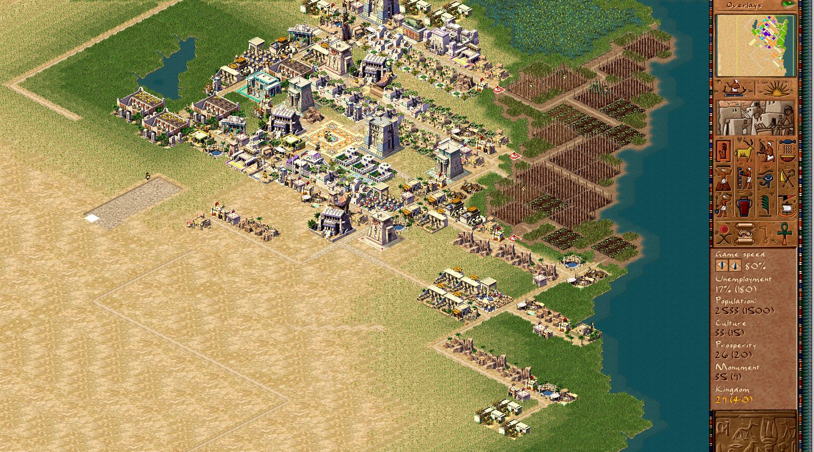
← Все статьи